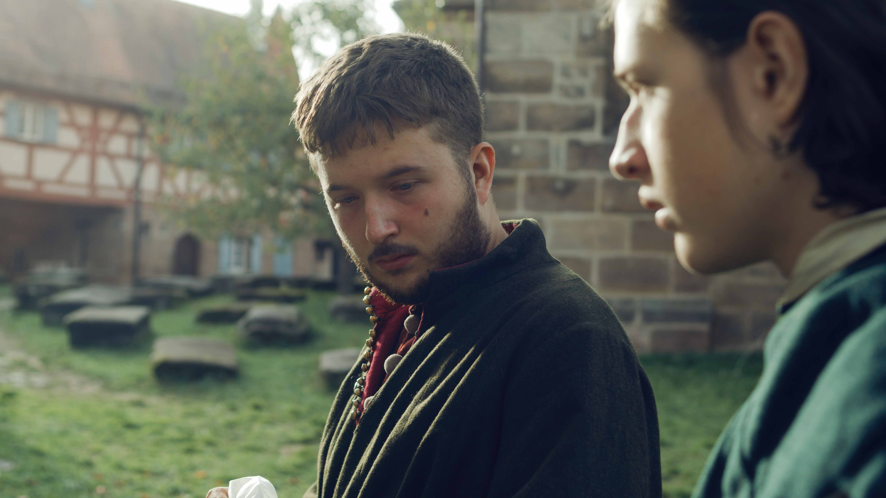

Kurzspielfilm
Ritter, Tod und Teufel

Im Sommer 2022 drehte ich gemeinsam mit Leif Eisenberg und Noelle Goetz den Kurzspielfilm namens "Ritter, Tod und Teufel". Da der Film aktuell auf Festivaltournee ist, dauert die Postproduktion noch an und es gibt noch kein Ergebnis.
Dieses Projekt war bisher allerdings das ambitionierteste Filmprojekt, das ich selbst in einer kreativ entscheidenden Position umgesetzt habe. Der Fokus auf ein durchgängiges Lichtkonzept war für mich dabei besonders interessant, doch auch die filmische Auflösung war zuweilen eine Herausforderung, da wir oft in kleinen, mittelalterlichen Kapellen oder in engen Burgzimmern drehten.
BTS / Standbilder

